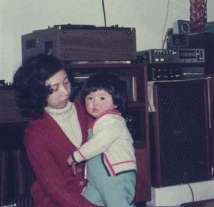
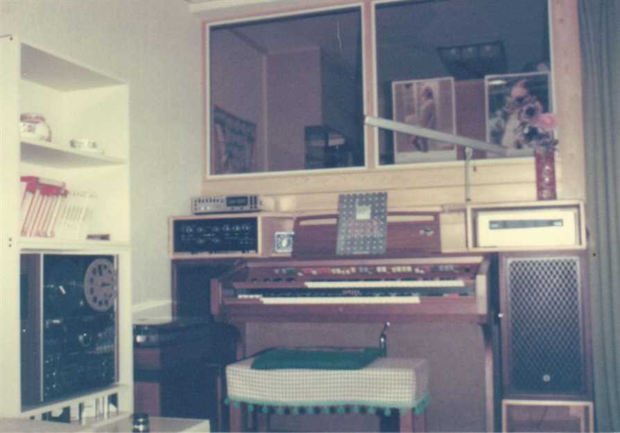
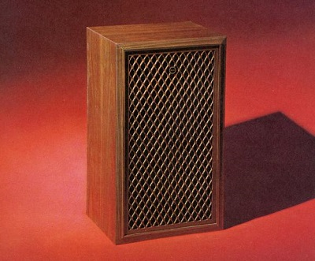
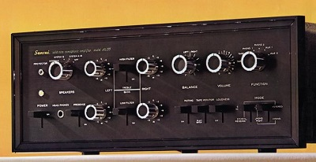
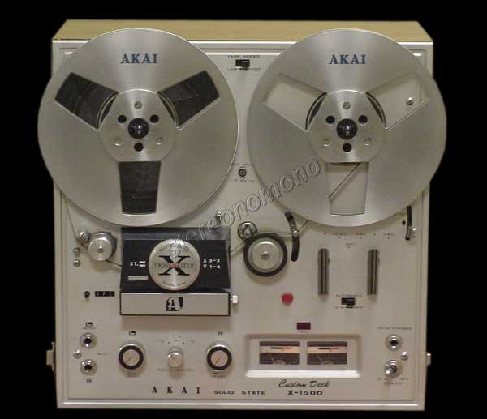
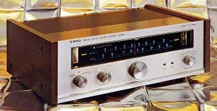
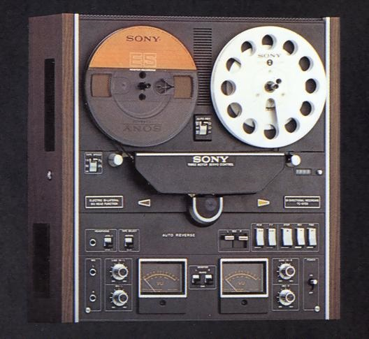
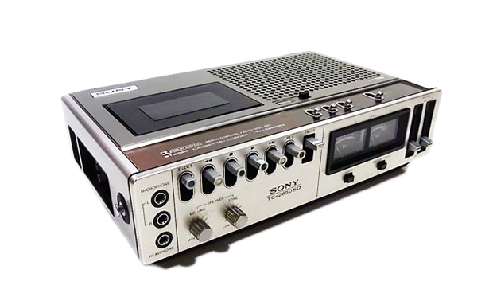

オーディオ
20代初め（1968年頃）オーディオに嵌った。スピーカー、アンプ、レコードプレイヤー、オープンリールデッキ、FM放送チューナーなどを単体で購入し、
それらを組み合わせステレオ装置とした。
レコードを購入してもレコード盤の劣化を避けるため、最初に聴くときにテープに録音し、いつもはテープを聴くようにしていた。
実際、録音しテープをたくさん棚に保管していたが、録音後あまり聴いていなかった。
今考えると録音することを楽しんでいたようである。オープンリールデッキは2台購入した。
当時は大きなテープがぐるぐる回るオープンリールデッキがかっこよく感じていた。
また、通常はスピーカーボックスの中に複数のスピーカーがあり、１つのアンプで供給しているが、音源を高性能フィルターで高音、中音、低音に分割し、
それぞれにアンプを通しスピーカーにパワーを供給する、この新たな方式を実現するための装置を自作した。
オーディオファンと言っても、音楽を単に聴くのではなく、機器による音の違いを比較したり、調整したり、何かを自作したりを楽しんでいた。
下記写真は1973年、山科椥辻に住んでいた頃で、中央上部が「オープンリールデッキ」、見えないがその下に「レコードプレイヤ」、そして右側上より「ツイータ」（高音スピーカー）
「カセットテープデッキ」、各種機器の「電源入り切りスイッチボックス」（自作）、「スピーカー」です。
この頃は自作したフィルター、アンプは使用せず、シンプルな構成にしていた。

下記写真は1975年、山科東野に住んでいた頃で、中央のエレクトーンを中心に両側に「スピーカー」を配置した。
スピーカーの上に「FM放送チューナ」、「アンプ」が置けるように、また、
リビングルームと台所の間にガラス窓付仕切りを設けるように自分で大工仕事をした。個々の機器は1973年のものと同じである。

50年以上前の各機器を思い出しながらWEBサイトで検索し、メーカ、型式、写真、当時の価格などを調べた。
サンスイ スピーカ SP-100 （1966年発売 1個 21,000円）

サンスイ アンプ AU-777 （ 1967年発売 57,000円）

アカイ オープンリールデッキ X-150D （1967年発売 59,500円）

トリオ FMチューナー KT-7000 （1970発売 61,000円）

SONY オープンリールデッキ TC-9700 （1971年発売 96,800円）

SONY カセットデッキ TC-2850SD （1973年発売 52,800円）

今から思えば以外に高価な機器を購入していたので、当時の物価をWEBサイトで調べた。
昭和41〜昭和47 (1966-1972) の物価
【物 価】（昭和41/1966年）
封書切手 １５円 はがき ７円 国鉄初乗り運賃 ２０円
パートタイマー 時給 ＠ ７０円 ・ 日給 ５６０円
国立大学授業料年額 （文系） ……………… １万２０００円
公営住宅 （２ＤＫ）１ヶ月当り賃借料 平均 ……… ７６００円
【物 価】（昭和42/1967年）
公衆浴場 ３２円 都バス ３０円 地下鉄最低 30円
新入社員向け背広既製服 １万７０００円前後 コーヒー ７０〜８０円
地方公務員平均月収（在職２５〜３０年） ６万７０８６円 大工日当 ２７００円
ガソリン １リッター ５０円 民宿（１泊２食付） ８８０円 かけそば ６０円
【物 価】（昭和43/1968年）
国鉄普通運賃 上野 → 青森 ２０６０円 東京 →大 阪 １７３０円
朝日新聞 朝夕刊セット 月決め ６６０円 米（10ｋｇ） １５２０円
総理大臣月給 ５５万３３００円 封切映画館入場券 ４５０円
大学卒 初任給 ３万２００円 ビール １２７円 かけそば ７０円
【物 価】（昭和44/1969年）
国鉄 普通旅客運賃 上野→青森 ２５６０円 新橋→大阪 ２２３０円 最低３０円
公衆電話（１通話３分間）１０円 白米（10ｋｇ） １５３０円 牛肉（並100ｇ） １３０円
大学卒男子初任給 全国平均 ３万１２００円
【物 価】（昭和45/1970年）
タクシー 初乗り基本料金 １３０円 ビール （740ｍｌ びん １本） １４０円
清酒 （1800ｍｌ） 特級 １０８０円 １級 ８６０円 ２級 ５９０円
キャベツ （１玉） ６５円 レタス （１玉） ５０円 うな重 ５５０円
大学卒業 初任給 男子 ＝ ３万６７００円 女子 ＝ ３万０７００円
【物 価】（昭和46/1971年）
かけそば １００円 らーめん １８０円 ビール １４０円
コーヒー（喫茶店） １２０円 封書 １５円 はがき ７円
学生アルバイト時間給 ２３０円 週刊朝日 ８０円
朝日新聞・朝夕刊セット月決め ９００円
【物 価】（昭和47/1972年）
郵便切手：封書 ２０円 はがき １０円 銭湯入浴料金 ４８円
白米 10ｋｇ （こしひかり） ２５００円 （標準米） １４８０円 食パン １斤 ６０円
新卒初任給全国平均 大卒 ４８，６００円 高卒 ３７，９００円 中卒 ３１，７００円
国立大学授業料（年額） ３万６０００円
戻る